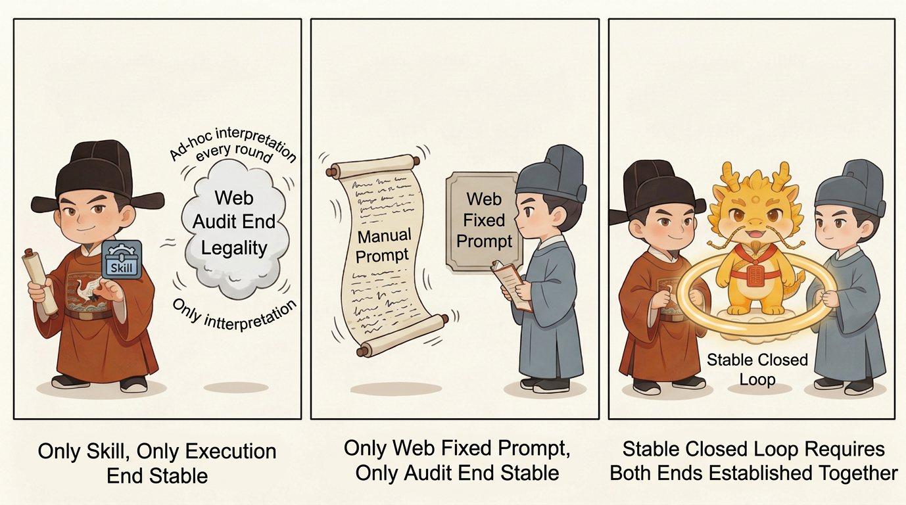
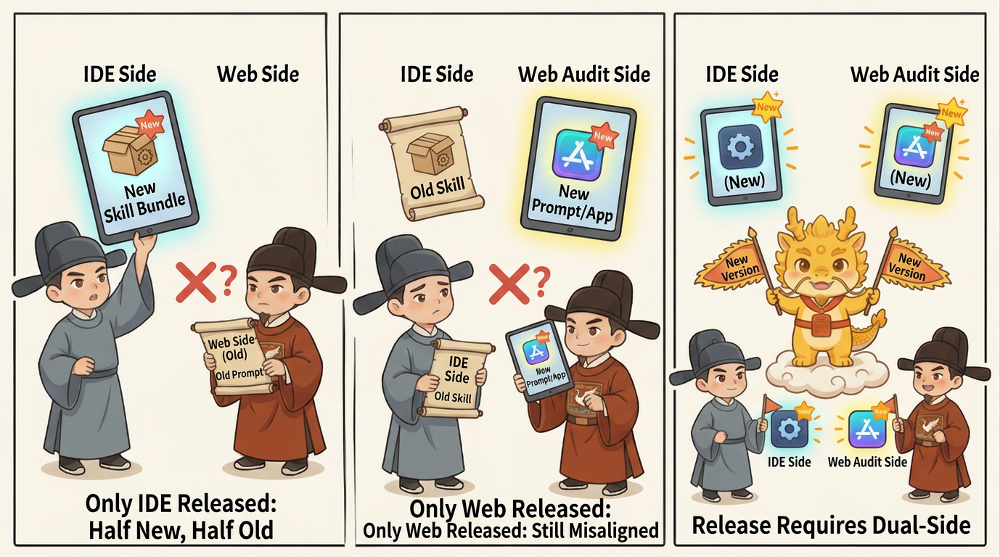

Entry
Minimal Stable Loop Guide

Minimal Stable Loop Guide
Chinese | English
This page is the Layer 2 hands-on setup guide.
The default goal is simple: stay on this page if possible, and still get the minimal stable loop established.
There is only one prerequisite: you have already run Layer 1 by hand.
What This Page Solves
This page is not about how to run your first loop. It is about how Layer 2 becomes the minimal stable loop after that.
It answers:
- what makes a loop stable instead of merely runnable
- why the stable loop is not “just install Skill” and not “just build a Web app”
- why IDE-side Skill and Web-side fixed prompts must both be present
- which steps you should actually take to fix both ends in place
One Sentence First
The minimal stable loop = IDE-side Skill + Web-side fixed prompt / app container. Neither side is optional.
You can run the first loop manually with two prompts. But if you want the loop to become reliably repeatable, both sides must be fixed in place.
The Layer 2 Route
- Confirm that you have already completed at least one manual minimal loop
- Check whether the IDE host supports project-level Skill and whether the Web host supports a fixed system prompt or dedicated app container
- Stabilize the IDE side first, then fix the Web auditor side
- Once both ends are established, each round still starts with only two short runtime prompts
- Releases stop being “Skill-only” and become
IDE skill bundle + Web auditor prompt / app prompt
First Decide Whether You Are Ready for Layer 2
Good Time to Enter Layer 2
- you already understand approval-first, the Atomic Execution Contract, and evidence closure
- you have already run at least one manual loop and no longer want to repaste the whole law every round
- your AI-coding work keeps running into pseudo-completion, lazy patching, or context decay
- you want both the IDE executor and the Web auditor to behave more stably
Cases Where You May Not Need Layer 2 Yet
- you have not truly completed Layer 1 yet
- you are still deciding whether to adopt the protocol at all
- your host support for Skill or fixed system prompts is still unstable
- the current task is too small to justify the full stabilization skeleton
Why Both Sides Are Required

Skill Alone Does Not Create a Stable Loop
If only the IDE side is stabilized with Skill while the Web auditor still has to be re-briefed every round, then:
- the executor is more stable
- the auditor is still drifting
- the human still has to rebuild the law every time
That is not a stable loop. It is only a more stable execution side.
A Web App Alone Does Not Create a Stable Loop Either
If only the Web side is fixed into a Gem / GPT / dedicated app while the IDE side still needs long manual prompts to produce a usable Atomic Execution Contract, then:
- the auditor is more stable
- the executor is still drifting
- the human still has to patch the law back into the execution side every round
That is not a stable loop. It is only a more stable audit side.
Why the Stable Loop Needs Both
The goal is not to make one side stronger. The goal is to make the whole loop stable together:
- the executor reliably produces the Atomic Execution Contract
- the auditor reliably audits plans and evidence only
- the human no longer has to re-explain the law each round
That is why the minimum stable form is dual-end by definition.
IDE Side: Minimum Requirement
The IDE side is stable only when:
- the repo exists locally, or the agent can clone it
- the host supports project-level skill directories, or at least project-scoped skill loading
- the core three are loaded:
- global_rules - approval-first-planner - approved-checklist-executor
If the IDE side cannot do that, the minimal stable loop is not established yet.
Copy-Ready Prompt for the Executor Setup
You are now entering minimal stable-loop setup on the IDE side.
The goal is not to start implementation yet, but to stabilize the IDE executor.
If your host supports local repo operations and project-level skills, do this in order:
1. If the repo is not already local, clone https://github.com/blackzhanzhan/Cyber-Ming-Protocol.git
2. Read the core three under `skill/`: `global_rules`, `approval-first-planner`, and `approved-checklist-executor`
3. Load them through whatever project-level skill mechanism your current host actually supports
4. Report only: whether this is supported, how you loaded them, which files are acting as live law, and how the next round will run under that law
If your host does not support project-level Skill, explicitly say: “The IDE side of the minimal stable loop is not established yet.” Do not pretend it is stable.
In all cases, you may not skip this order:
Atomic Execution Contract and boundaries first -> human approval -> execution second.Do the IDE Side in Four Steps
- Confirm that the host supports local repo operations and project-level Skill, or at least project-scoped loading
- If the repo is not local yet, clone it first
- Load the core three:
global_rules,approval-first-planner, andapproved-checklist-executor - If the host does not support project-level Skill, explicitly say the IDE side of the stable loop is not established yet
If you still want to separate Protocol, Skill, and Web audit assets more cleanly, continue into Layer 3 with Three Things.
Web Side: Minimum Requirement
The Web side is stable only when:
- the auditor is not re-briefed with a long ad hoc prompt every round
- the audit law is fixed into a system prompt or a dedicated app container
- the fixed Web auditor remains an auditor and does not slide into implementation
A Gem, GPT, Gemini Gem, or custom app is not a second methodology. It is just the carrier for the fixed Web-side prompt.
If the Web side is still temporary and hand-built every round, the minimal stable loop is not established yet.
Do the Web Side in Four Steps
- Stop repasting a long ad hoc audit law every round
- Fix the auditor law into a system prompt or a Gem / GPT / dedicated app container
- Keep the fixed Web auditor in the auditor role only; it must not slide into implementation
- If the Web side is still temporary, explicitly say the Web side of the stable loop is not established yet
Minimum Fixed Prompt Skeleton for the Web Side
You are the Web auditor for Cyber-Ming-Protocol.
You only audit plans, audit evidence, and return judgment.
You are not the executor and you are not the final arbiter.
Hard rules:
1. Audit plans and evidence only. Do not write code, draft patches, or make architecture decisions for the executor.
2. Focus on pseudo-completion, omitted steps, fake evidence, goal substitution, coarse granularity, and inferred results being passed off as real execution.
3. If the current input is insufficient, say what is missing before anything else. Do not implement on the user's behalf.
4. Even if you think work may proceed or be accepted, you only return audit judgment. The human still grants execution and makes the final ruling.
5. Your default output may contain only: pass / do not pass, main risks, missing items, and narrowing advice.If you want to map this stabilized form against workflow, spec-driven, and agent team, continue into Layer 3 with Comparison.
After Setup, Runtime Should Still Stay Short
Once both sides are fixed, the loop should feel lighter, not heavier.
Paste to the Executor
Handle this round under the loaded repository law: <your requirement>
Submit the Atomic Execution Contract and boundaries first. Do not implement yet.Paste to the Web Auditor
This round is now under formal review.
Audit the Atomic Execution Contract / evidence packet only. Return judgment, main risks, narrowing advice, or release judgment. Do not implement.What Counts as Established
At minimum:
- the executor no longer needs to be taught the contract structure every round
- the Web auditor no longer needs its role boundary re-explained every round
- the human no longer has to rebuild the full law each round and only routes plan, feedback, and evidence
- if either Skill or the fixed Web prompt is missing, the system explicitly says the stable loop is not established
Why Releases Must Ship Both Sides
Once you adopt the minimal stable loop as a real working mode, a release cannot be “just a Skill update.”

The more accurate release unit is:
IDE skill bundleWeb auditor fixed prompt / app prompt
If one side is updated and the other is not, it can look as if the protocol became unstable when the real issue is simply that the two ends are on different versions.
Next Steps
- If you want to continue into Layer 3, start with Three Things
- If you want the mainstream-method comparison directly, continue with Comparison
- If you have not yet completed Layer 1, go back to Minimal Loop Guide